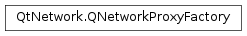

QNetworkProxyFactory¶
Synopsis¶
Virtual functions¶
- def
queryProxy([query=QNetworkProxyQuery()])
Static functions¶
- def
proxyForQuery(query) - def
setApplicationProxyFactory(factory) - def
setUseSystemConfiguration(enable) - def
systemProxyForQuery([query=QNetworkProxyQuery()]) - def
usesSystemConfiguration()
Detailed Description¶
The
PySide2.QtNetwork.QNetworkProxyFactoryclass provides fine-grained proxy selection.
PySide2.QtNetwork.QNetworkProxyFactoryis an extension toPySide2.QtNetwork.QNetworkProxy, allowing applications to have a more fine-grained control over which proxy servers are used, depending on the socket requesting the proxy. This allows an application to apply different settings, according to the protocol or destination hostname, for instance.
PySide2.QtNetwork.QNetworkProxyFactorycan be set globally for an application, in which case it will override any global proxies set withQNetworkProxy.setApplicationProxy(). If set globally, any sockets created with Qt will query the factory to determine the proxy to be used.A factory can also be set in certain frameworks that support multiple connections, such as
PySide2.QtNetwork.QNetworkAccessManager. When set on such object, the factory will be queried for sockets created by that framework only.
System Proxies¶
You can configure a factory to use the system proxy’s settings. Call the
PySide2.QtNetwork.QNetworkProxyFactory.setUseSystemConfiguration()function with true to enable this behavior, or false to disable it.Similarly, you can use a factory to make queries directly to the system proxy by calling its
PySide2.QtNetwork.QNetworkProxyFactory.systemProxyForQuery()function.Warning
Depending on the configuration of the user’s system, the use of system proxy features on certain platforms may be subject to limitations. The
PySide2.QtNetwork.QNetworkProxyFactory.systemProxyForQuery()documentation contains a list of these limitations for those platforms that are affected.
-
class
PySide2.QtNetwork.QNetworkProxyFactory¶ Creates a
PySide2.QtNetwork.QNetworkProxyFactoryobject.Since
PySide2.QtNetwork.QNetworkProxyFactoryis an abstract class, you cannot create objects of typePySide2.QtNetwork.QNetworkProxyFactorydirectly.
-
static
PySide2.QtNetwork.QNetworkProxyFactory.proxyForQuery(query)¶ Parameters: query – PySide2.QtNetwork.QNetworkProxyQueryReturn type: This function takes the query request,
query, examines the details of the type of socket or request and returns a list ofPySide2.QtNetwork.QNetworkProxyobjects that indicate the proxy servers to be used, in order of preference.
-
PySide2.QtNetwork.QNetworkProxyFactory.queryProxy([query=QNetworkProxyQuery()])¶ Parameters: query – PySide2.QtNetwork.QNetworkProxyQueryReturn type: This function takes the query request,
query, examines the details of the type of socket or request and returns a list ofPySide2.QtNetwork.QNetworkProxyobjects that indicate the proxy servers to be used, in order of preference.When reimplementing this class, take care to return at least one element.
If you cannot determine a better proxy alternative, use
QNetworkProxy.DefaultProxy, which tells the code querying for a proxy to use a higher alternative. For example, if this factory is set to aPySide2.QtNetwork.QNetworkAccessManagerobject, DefaultProxy will tell it to query the application-level proxy settings.If this factory is set as the application proxy factory, DefaultProxy and NoProxy will have the same meaning.
-
static
PySide2.QtNetwork.QNetworkProxyFactory.setApplicationProxyFactory(factory)¶ Parameters: factory – PySide2.QtNetwork.QNetworkProxyFactorySets the application-wide proxy factory to be
factory. This function will take ownership of that object and will delete it when necessary.The application-wide proxy is used as a last-resort when all other proxy selection requests returned
QNetworkProxy.DefaultProxy. For example,PySide2.QtNetwork.QTcpSocketobjects can have a proxy set withQTcpSocket.setProxy, but if none is set, the proxy factory class set with this function will be queried.If you set a proxy factory with this function, any application level proxies set with
QNetworkProxy.setApplicationProxywill be overridden, andPySide2.QtNetwork.QNetworkProxyFactory.usesSystemConfiguration()will returnfalse.
-
static
PySide2.QtNetwork.QNetworkProxyFactory.setUseSystemConfiguration(enable)¶ Parameters: enable – PySide2.QtCore.boolEnables the use of the platform-specific proxy settings, and only those. See
PySide2.QtNetwork.QNetworkProxyFactory.systemProxyForQuery()for more information.Calling this function with
enableset totrueresets any proxy orPySide2.QtNetwork.QNetworkProxyFactorythat is already set.Note
See the
PySide2.QtNetwork.QNetworkProxyFactory.systemProxyForQuery()documentation for a list of limitations related to the use of system proxies.
-
static
PySide2.QtNetwork.QNetworkProxyFactory.systemProxyForQuery([query=QNetworkProxyQuery()])¶ Parameters: query – PySide2.QtNetwork.QNetworkProxyQueryReturn type: This function takes the query request,
query, examines the details of the type of socket or request and returns a list ofPySide2.QtNetwork.QNetworkProxyobjects that indicate the proxy servers to be used, in order of preference.This function can be used to determine the platform-specific proxy settings. This function will use the libraries provided by the operating system to determine the proxy for a given connection, if such libraries exist. If they don’t, this function will just return a
PySide2.QtNetwork.QNetworkProxyof typeQNetworkProxy.NoProxy.On Windows, this function will use the WinHTTP DLL functions. Despite its name, Microsoft suggests using it for all applications that require network connections, not just HTTP. This will respect the proxy settings set on the registry with the proxycfg.exe tool. If those settings are not found, this function will attempt to obtain Internet Explorer’s settings and use them.
On macOS , this function will obtain the proxy settings using the SystemConfiguration framework from Apple. It will apply the FTP, HTTP and HTTPS proxy configurations for queries that contain the protocol tag “ftp”, “http” and “https”, respectively. If the SOCKS proxy is enabled in that configuration, this function will use the SOCKS server for all queries. If SOCKS isn’t enabled, it will use the HTTPS proxy for all TcpSocket and UrlRequest queries.
On other systems, this function will pick up proxy settings from the “http_proxy” environment variable. This variable must be a URL using one of the following schemes: “http”, “socks5” or “socks5h”.
Limitations¶
These are the limitations for the current version of this function. Future versions of Qt may lift some of the limitations listed here.
- On macOS , this function will ignore the Proxy Auto Configuration settings, since it cannot execute the associated ECMAScript code.
- On Windows platforms, this function may take several seconds to execute depending on the configuration of the user’s system.
-
static
PySide2.QtNetwork.QNetworkProxyFactory.usesSystemConfiguration()¶ Return type: PySide2.QtCore.boolReturns whether the use of platform-specific proxy settings are enabled.
© 2018 The Qt Company Ltd. Documentation contributions included herein are the copyrights of their respective owners. The documentation provided herein is licensed under the terms of the GNU Free Documentation License version 1.3 as published by the Free Software Foundation. Qt and respective logos are trademarks of The Qt Company Ltd. in Finland and/or other countries worldwide. All other trademarks are property of their respective owners.